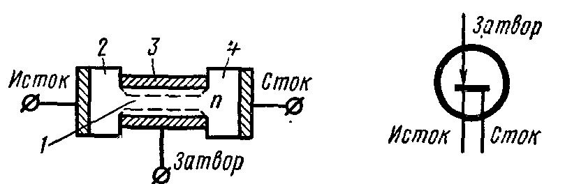
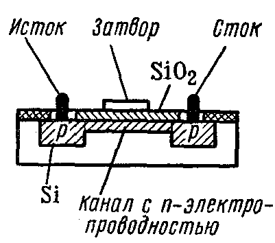
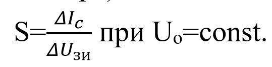

Полевым транзистором называется трехэлектродный п/п прибор , в котором ток создают
ОНЗ под действием
продольного электрического поля, а управление величиной тока осуществляется
поперечным электрическим
полем, создаваемым напряжением, приложенным к управляющему
электроду.
В полевых тарнзисторах работа прибора основана на использовании носителей
зарядов одного знака:
или только электронов, или только дырок, поэтому эти транзисторы называют иногда
униполярными. В
выходной цепи полевого транзистора
отсутсвует электро-дырочный переход, поэтому его относят к группе транзисторов без
инжекции.Работа
полевых транзисторов управляется электрическим полем, а биполярные транзисторы
управляется
электрическим током.
Полевой транзистор имеет три или более электродов. Электрод через который
носители заряда
втекают в канал , называют истоком. Электрод через который носители заряда вытекают
из канала называют
стоком.
Электрод полевого транзистора который подают электрический сигнал называют
затвором. Тонкий
слой полупроводника типа n или p, ограниченный с двух сторон р- n переходом называют
каналом.
 В
зависимости от вида управляющего электрического поля различают основные группы
полевых транзисторов:
с управляющим р- n переходом - это полевой транзистор, затвор которого
отделен в электрическим
отнашении от канала р- n переходом, смещенным в обратном направлении.
с изолированным затвором – это полевой транзистор , затвор которого отделен
в электрическом
отнашении от канала слоем диэлектрика.
МДП и МОП -транзисторы.

Существует две
разновидности МДП- транзисторов с индуцированным и со встроенным каналам.
Основой прибора служит
пластинка монокристаллического кремния
р-типа.Область истока и стока представляют собой участок кремения с примесью
н-типа.между ними
расположена узкая полоска кремния н-типа (канал). Затвором служит металлическая
пластина,
изолированная от канала слоем диэлектрика. В зависимости
от полярности напряжения, приложенного к затвору канал обедняется или обогащается
носителями заряда.
При отрицательном напряжении на затворе, электроны выталкиваются из области
канала в объем
полупроводника. При этом канал обедняется носителями заряда , что ведет к уменьшению
тока в канале.
Положительное напряжение на затворе способствует втягиванию электронов из
пластины в канал. В
этом режиме тока канала возрастает.
Вывод: в отличие от полевого транзистора с р- n переходом транзисторы с
изолированными
затворами можно работать с нулевым, отрицательным и положительном напряжении на
затворе.
Параметры полевых транзисторов.
Крутизна характеристики (характеризует эффективность управляющего действия
затвора)

Напряжение отсечки – это обратоное напряжение на затворе, при котором
токопроводящий канал
окажется перекрытым.